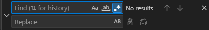

コードを書いていると、こんな作業にぶち当たることがあります。
そんな面倒なテキスト操作を解決してくれるのが「正規表現」です。Visual Studio Code (以下、VSCode) の検索・置換機能で正規表現を使えば効率は劇的に向上します。
この記事では、基本的な使い方から一歩進んだテクニックまで、実用的な例を交えながら分かりやすく解説します。
まずはVSCodeで正規表現を使うための準備です。
Ctrl+F (Windows/Linux) または Cmd+F (Mac) で検索ウィンドウを開きます。.* というアイコンをクリックして、青く点灯させます。
これで準備は完了です。入力したテキストが正規表現として解釈されるようになります。
ここでは、頻繁に使う基本的な正規表現の記号（メタ文字）についてです。
| 記号 | 意味 | 使用例 |
|---|---|---|
. |
任意の1文字（改行を除く） | a.c は abc, aec, a3c などにマッチします。 |
* |
直前の文字の0回以上の繰り返し | ab*c は ac, abc, abbbc などにマッチします。 |
+ |
直前の文字の1回以上の繰り返し | ab+c は abc, abbbc にはマッチしますが、 ac にはマッチしません。 |
? |
直前の文字の0回または1回 | ab?c は ac, abc にはマッチしますが、 abbc にはマッチしません。 |
\ |
メタ文字のエスケープ | \. は . という文字そのものにマッチします。* や + も同様です。 |
[ ] |
文字クラス（角括弧内のいずれか1文字） | [abc] は a, b, c のいずれか1文字にマッチします。[a-z] のように範囲指定も可能です。 |
[^ ] |
否定文字クラス（角括弧内の文字以外） | [^abc] は a, b, c 以外の任意の1文字にマッチします。 |
^ |
行の先頭 | ^hoge は行の先頭にある hoge にのみマッチします。 |
$ |
行の末尾 | hoge$ は行の末尾にある hoge にのみマッチします。 |
| ` | ` | OR条件 |
毎回 [0-9] や [a-zA-Z0-9_] と書くのは面倒です。そんな時に使える、便利なショートカットがあります。
\d: 任意の数字 ([0-9] と同じ)\w: 英数字とアンダースコア ([a-zA-Z0-9_] と同じ)\s: スペース、タブなどの空白文字\n: 改行文字正規表現の真価は、パターンを組み合わせて使えるところにあります。
()丸括弧 () で囲むと、複数の文字を一つのまとまりとして扱えます。
(hoge)+hoge という文字列が1回以上繰り返される場合にマッチします。hoge, hogehoge{}波括弧 {} を使うと、直前の文字やグループが繰り返される回数を細かく指定できます。
(hoge){2}: hoge がちょうど2回繰り返す (hogehoge)(hoge){2,}: hoge が2回以上繰り返す (hogehoge, hogehogehoge…)(hoge){2,3}: hoge が2回か3回繰り返す (hogehoge, hogehogehoge)* や + は、デフォルトでは条件に合う最も長い文字列にマッチします。この方法を欲張り(Greedy)マッチと言います。「最も多く（長く）」だから欲張りなんですね。しらんけど＿( _´ω`)_ﾍﾟｼｮ
<div>hoge</div><div>fuga</div><div>.*</div><div>hoge</div><div>fuga</div> （全体にマッチしてしまう）全体マッチをを避けたい場合、* や + の後ろに ? をつけます。すると、条件に合う最も短い文字列にマッチするようになります。この方法を怠惰(Lazy)マッチと言います。「長いものがあろうと最短しか取らない」から怠惰なんですね。しらんけど＿( _´ω`)_ﾍﾟｼｮ
<div>hoge</div><div>fuga</div><div>.*?</div><div>hoge</div><div>fuga</div>正規表現が最も輝くのは「置換」機能と組み合わせたときです。先ほど解説した() によるグループ化は、マッチした部分を後で再利用するために「キャプチャ」する役割も持っています。
$1, $2検索パターン内で () を使ってキャプチャした部分は、置換文字列の中で $1, $2… のようにして呼び出せます（1番目の括弧が $1、2番目が $2）。
(Taro) (Yamada)$2, $1Yamada, Taro\[(.*?)\]\((.*?)\)
\[ と \]、 \( と \) はエスケープしています。(.*?) でリンクテキストとURLをそれぞれキャプチャします。<a href="$2">$1</a>[Google](https://www.google.com)<a href="https://www.google.com">Google</a>\1, \2() でキャプチャした内容は、同じ検索パターンの中で \1, \2 を使って参照することもできます（後方参照）。
(hoge)\1hoge という文字列が2回連続している場合にマッチします。hogehoge と書くのと同じ意味です。hogehogehoge, hogefuga最後に、日常的なコーディングで役立つ実践的な例をいくつか紹介します。
\s+$$)にある1つ以上の空白文字(\s+)を検索し、空の文字列に置換することで削除します。console.log() をすべて削除する^(\s*)console\.log\(.*\);?(\n|$)console.log(...) の行全体を検索し、削除します。日本語の文字（ひらがな、カタカナ、漢字）を含むテキストを検索したい場合に便利です。
[ぁ-ん][ァ-ヶー][一-龯][ぁ-んァ-ヶー一-龯]正規表現は、慣れるまで少し時間がかかるかもしれませんが、一度身につければあなたの強力な武器になります。最初は簡単なパターンから試していき、少しずつ複雑なパターンに挑戦してみてください。
また、「Regex101」のようなサイトを使えば、正規表現の動作をリアルタイムで確認しながら学習できます。